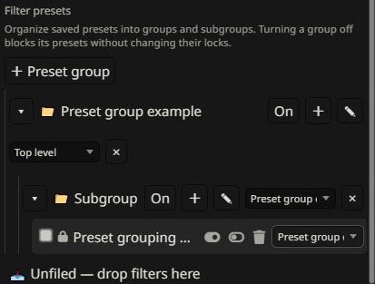
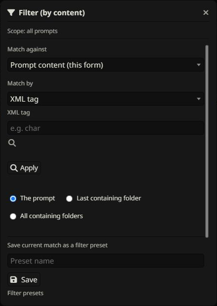
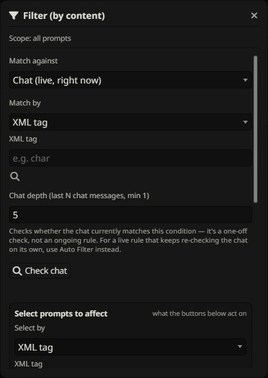
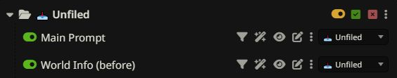

Save a match. Give it a home.
Filter Presets are reusable manual actions. Their groups organize the saved presets themselves, independently of prompt folders.
When should I use a preset?
Use a saved preset when you often repeat the same matching action, such as disabling prompts containing a particular XML tag. The preset stores the search and target, not a frozen list of matches. If you edit prompt content later, the next run uses that new content.
Use a prompt folder to organize the prompts themselves. Use a preset group to organize the saved actions. Use Auto Filter when an action should respond to the conversation without a manual click.


Save a filter preset
- Open Filter from the toolbar.
- Select Prompt content and choose XML tag, Word, Regex, or Regex list matching.
- Enter a match and choose whether it affects prompts, their last containing folder, or all containing folders.
- Enter a preset name and click Save. Applying the match first is optional.


Group saved presets
- Scroll to Filter presets and click ＋ Preset group.
- Enter a name and save the group.
- Use the group’s ＋ control to create a subgroup.
- Move a preset with its group selector or drag it to a group.
Run, lock, or mute
Enable and Disable re-evaluate the saved match against current content before applying it. Locking a preset blocks its actions. Turning a group off blocks every preset below it without changing their individual locks. Turning the group back on restores access to unlocked presets.
Groups can collapse, move, rename, and nest. Deleting a group keeps its presets and moves them up. Grouping does not execute a preset automatically.
Chat filter presets
Choose Chat in Match against to save a recent-chat condition plus a prompt/folder selection. Chat filter presets have their own groups. Their manual Enable/Disable controls check the condition and selection again when used. For automatic execution, use Auto Filter.


Exclusions
The filter exclusion control on a prompt or folder removes it from manual content matching and saved filter presets. Auto Filter has a separate exclusion control.

